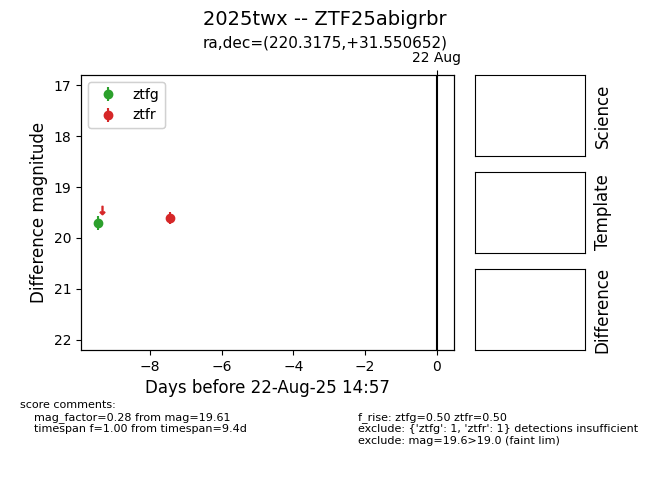

Target 2025twx at 2025-08-21 11:20, see:
FINK: fink-portal.org/ZTF25abigrbr
Lasair: lasair-ztf.lsst.ac.uk/objects/ZTF25abigrbr
ALeRCE: alerce.online/object/ZTF25abigrbr
TNS: wis-tns.org/object/2025twx
YSE: ziggy.ucolick.org/yse/transient_detail/2025twx
alt names
ZTF25abigrbr (ztf,alerce)
2025twx (tns,yse)
coordinates:
equatorial (ra, dec) = (220.3175,+31.55065)
galactic (l, b) = (50.0318,+65.72528)
photometry
last ztfg=19.71, ztfr=19.61
1 ztfg, 1 ztfr detections
